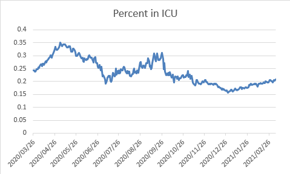
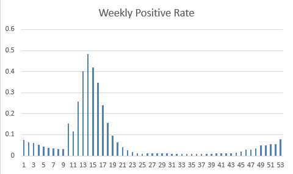
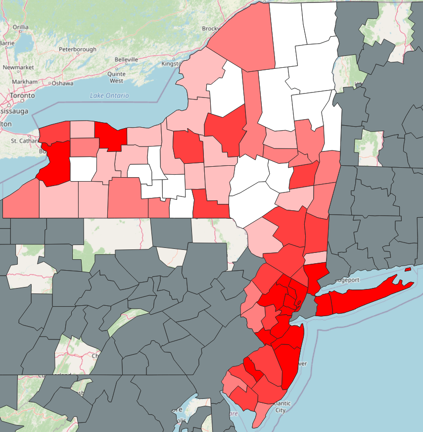

This is a project I created based on a course by Arthur Lemke at Salisbury University. His approach was to teach students how to write spatial SQL using SQLite. There are advantages to SQLite in that it is a single file that you can keep everything on and you can save it to a sharepoint library or a flashdrive and run everything from there. There isn't much of a problem using it for the course, but I wanted to make a significant change to the course by adding my own challenge; converting it to PostgreSQL. So almost all of the SQL queries will be written in PostgreSQL.
The other tools in this course were Spatialite_gui and QGIS. Both of these tools are "theoretically" compatible with PostgreSQL, however, in practice I found Spatialite_gui doesn't really work well with PostgreSQL. So some of the exploratory data is written in spatialite to create the spatial connections to QGIS. Many or if not all of the QGIS queries and the charts and maps can be directly created using PostgreSQL in QGIS so that's what I did. I had to teach myself on the fly.
By the way, I chose to create this in a Jupyter Notebook because it is easy to import it directly to a GIST and then post it in my blog or share it with someone.
I will be covering the COVID-19 data collected during the peak of the outbreak in 2020-21. The sources might be updated in a later project.
County COVID: https://raw.githubusercontent.com/nytimes/covid-19-data/master/us-counties.csv
County data: https://www.census.gov/data/datasets/time-series/demo/popest/2010s-counties-total.html
Boundaries (state, county, urban): https://www.census.gov/geographies/mapping-files/time-series/geo/carto-boundary-file.html
-- 01 Data for a particular state, and see the increase since the day before SELECT dt "date", hospitalizedcurrently "in_hospital", hospincrease FROM daily WHERE state = 'CA' AND hospitalizedcurrently > 20;
`[Query Result]` 346 rows in set (0.01 sec)
| ROW | date | in_hospital | hospincrease |
| ---: | :---: | ---: | ---: |
| 1 | 2021-03-07 00:00:00 | 4291 | 0 |
| 2 | 2021-03-06 00:00:00 | 4513 | 0 |
| 3 | 2021-03-05 00:00:00 | 4714 | 0 |
| 4 | 2021-03-04 00:00:00 | 4967 | 0 |
| 5 | 2021-03-03 00:00:00 | 5110 | 0 |
| ... | ... | ... | ... |
| 342 | 2020-03-31 00:00:00 | 1617 | 185 |
| 343 | 2020-03-30 00:00:00 | 1432 | 398 |
| 344 | 2020-03-29 00:00:00 | 1034 | 0 |
| 345 | 2020-03-28 00:00:00 | 1034 | 288 |
| 346 | 2020-03-27 00:00:00 | 746 | 746 |
-- 02 Multiple States SELECT dt "Date" , hospitalizedcurrently "in hospital" FROM daily WHERE state = 'MD' OR state = 'FL' OR state = 'NY'
`[Query Result]` 1140 rows in set (0.01 sec)
| ROW | Date | in hospital |
| ---: | :---: | ---: |
| 1 | 2021-03-07 00:00:00 | 3307 |
| 2 | 2021-03-07 00:00:00 | 818 |
| 3 | 2021-03-07 00:00:00 | 4789 |
| 4 | 2021-03-06 00:00:00 | 3352 |
| 5 | 2021-03-06 00:00:00 | 830 |
| ... | ... | ... |
| 1136 | 2020-02-03 00:00:00 | |
| 1137 | 2020-02-02 00:00:00 | |
| 1138 | 2020-02-01 00:00:00 | |
| 1139 | 2020-01-31 00:00:00 | |
| 1140 | 2020-01-30 00:00:00 | |
-- 03 multiple states, but easier
SELECT
dt "Date"
, hospitalizedcurrently "In Hospital"
FROM
daily
WHERE
state IN ('MD', 'FL', 'NY')
`[Query Result]` 1140 rows in set (0.01 sec)
| ROW | Date | In Hospital |
| ---: | :---: | ---: |
| 1 | 2021-03-07 00:00:00 | 3307 |
| 2 | 2021-03-07 00:00:00 | 818 |
| 3 | 2021-03-07 00:00:00 | 4789 |
| 4 | 2021-03-06 00:00:00 | 3352 |
| 5 | 2021-03-06 00:00:00 | 830 |
| ... | ... | ... |
| 1136 | 2020-02-03 00:00:00 | |
| 1137 | 2020-02-02 00:00:00 | |
| 1138 | 2020-02-01 00:00:00 | |
| 1139 | 2020-01-31 00:00:00 | |
| 1140 | 2020-01-30 00:00:00 | |
-- 04 top 10 dates and states for hospitalizations SELECT dt "Date" , state , hospincrease "New Increase" FROM daily ORDER BY CAST(hospincrease AS INTEGER) DESC LIMIT 10
`[Query Result]` 10 rows in set (0.01 sec)
| ROW | Date | state | New Increase |
| ---: | :---: | :--- | ---: |
| 1 | 2020-07-10 00:00:00 | FL | 6974 |
| 2 | 2020-04-09 00:00:00 | MI | 3826 |
| 3 | 2020-04-07 00:00:00 | IL | 3680 |
| 4 | 2020-04-06 00:00:00 | NJ | 2390 |
| 5 | 2020-04-11 00:00:00 | CA | 2339 |
| 6 | 2020-04-14 00:00:00 | CA | 2148 |
| 7 | 2020-04-07 00:00:00 | PA | 1665 |
| 8 | 2020-04-25 00:00:00 | IN | 1515 |
| 9 | 2020-05-01 00:00:00 | GA | 1500 |
| 10 | 2020-04-21 00:00:00 | MD | 1433 |
-- 05 TOP 10 dates and states for hospitalizations SELECT dt "Date" , state , deathincrease FROM daily ORDER BY CAST(deathincrease AS INTEGER) DESC LIMIT 10
`[Query Result]` 10 rows in set (0.01 sec)
| ROW | Date | state | deathincrease |
| ---: | :---: | :--- | :--- |
| 1 | 2020-12-28 00:00:00 | FL | 99 |
| 2 | 2020-12-06 00:00:00 | IL | 99 |
| 3 | 2021-02-17 00:00:00 | GA | 99 |
| 4 | 2021-01-05 00:00:00 | TN | 99 |
| 5 | 2020-12-20 00:00:00 | PA | 99 |
| 6 | 2020-12-10 00:00:00 | IA | 99 |
| 7 | 2021-02-24 00:00:00 | NJ | 99 |
| 8 | 2021-02-20 00:00:00 | VA | 99 |
| 9 | 2021-02-12 00:00:00 | PA | 99 |
| 10 | 2020-11-25 00:00:00 | FL | 99 |
-- 06 find data for a particular month for a state SELECT * FROM daily WHERE EXTRACT(MONTH FROM dt) = 7 -- Filter for July (month number 7) -- filter by state (e.g., 'FL'), you can add: AND state = 'FL' LIMIT 5
`[Query Result]` 5 rows in set (0.01 sec)
| ROW | date | state | positive | probablecases | negative | pending | totaltestresultssource | totaltestresults | hospitalizedcurrently | hospitalizedcumulative | inicucurrently | inicucumulative | onventilatorcurrently | onventilatorcumulative | recovered | lastupdateet | datemodified | checktimeet | death | hospitalized | hospitalizeddischarged | datechecked | totaltestsviral | positivetestsviral | negativetestsviral | positivecasesviral | deathconfirmed | deathprobable | totaltestencountersviral | totaltestspeopleviral | totaltestsantibody | positivetestsantibody | negativetestsantibody | totaltestspeopleantibody | positivetestspeopleantibody | negativetestspeopleantibody | totaltestspeopleantigen | positivetestspeopleantigen | totaltestsantigen | positivetestsantigen | fips | positiveincrease | negativeincrease | total | totaltestresultsincrease | posneg | dataqualitygrade | deathincrease | hospitalizedincrease | hash | commercialscore | negativeregularscore | negativescore | positivescore | score | grade | dt | hospincrease |
| ---: | :--- | :--- | :--- | :--- | :--- | :--- | :--- | :--- | ---: | :--- | :--- | :--- | :--- | :--- | :--- | :--- | :--- | :--- | :--- | :--- | :--- | :--- | :--- | :--- | :--- | :--- | :--- | :--- | :--- | :--- | :--- | :--- | :--- | :--- | :--- | :--- | :--- | :--- | :--- | :--- | :--- | :--- | :--- | :--- | :--- | :--- | :--- | :--- | :--- | :--- | :--- | :--- | :--- | :--- | :--- | :--- | :---: | ---: |
| 1 | 20200731 | FL | 463357 | | 3157702 | 3363 | totalTestEncountersViral | 4493776 | 8209 | 26905 | | | | | | 7/30/2020 23:59 | 2020-07-30T23:59:00Z | 07/30 19:59 | 6966 | 26905 | | 2020-07-30T23:59:00Z | 4712187 | 592572 | 4099817 | | 6966 | | 4493776 | 3633393 | 358283 | 19175 | 339059 | 353026 | 18780 | 334221 | | | | | 12 | 8900 | 39964 | 3624422 | 82202 | 3621059 | | 257 | 519 | 5d52acd136b2a74ac44b9beaee4b18a28e328738 | 0 | 0 | 0 | 0 | 0 | | 2020-07-31 00:00:00 | 0 |
| 2 | 20200730 | FL | 454457 | | 3117738 | 3304 | totalTestEncountersViral | 4411574 | 8395 | 26386 | | | | | | 7/29/2020 23:59 | 2020-07-29T23:59:00Z | 07/29 19:59 | 6709 | 26386 | | 2020-07-29T23:59:00Z | 4635026 | 580808 | 4035319 | | 6709 | | 4411574 | 3584193 | 358283 | 19175 | 339059 | 353026 | 18780 | 334221 | | | | | 12 | 9835 | 42396 | 3575499 | 80116 | 3572195 | | 252 | 519 | ed9604197b49d61e7e9da45b25dc8caf4bb787eb | 0 | 0 | 0 | 0 | 0 | | 2020-07-30 00:00:00 | 0 |
| 3 | 20200729 | FL | 444622 | | 3075342 | 3220 | totalTestEncountersViral | 4331458 | 8720 | 25867 | | | | | | 7/28/2020 23:59 | 2020-07-28T23:59:00Z | 07/28 19:59 | 6457 | 25867 | | 2020-07-28T23:59:00Z | 4557000 | 567610 | 3971204 | | 6457 | | 4331458 | 3531721 | | | | 353026 | 18780 | 334221 | | | | | 12 | 9320 | 37020 | 3523184 | 74521 | 3519964 | | 217 | 587 | 1fbcb891f11ad3fcab0b3caf4c60a37a43b9dba8 | 0 | 0 | 0 | 0 | 0 | | 2020-07-29 00:00:00 | 0 |
| 4 | 20200728 | FL | 435302 | | 3038322 | 3017 | totalTestEncountersViral | 4256937 | 8992 | 25280 | | | | | | 7/27/2020 23:59 | 2020-07-27T23:59:00Z | 07/27 19:59 | 6240 | 25280 | | 2020-07-27T23:59:00Z | 4485040 | 555415 | 3912374 | | 6240 | | 4256937 | 3485141 | | | | 353026 | 18780 | 334221 | | | | | 12 | 9138 | 39572 | 3476641 | 76414 | 3473624 | | 191 | 590 | a07431424d9df552356574ae43f0a25e16c20dc9 | 0 | 0 | 0 | 0 | 0 | | 2020-07-28 00:00:00 | 0 |
| 5 | 20200727 | FL | 426164 | | 2998750 | 2902 | totalTestEncountersViral | 4180523 | 9098 | 24690 | | | | | | 7/26/2020 23:59 | 2020-07-26T23:59:00Z | 07/26 19:59 | 6049 | 24690 | | 2020-07-26T23:59:00Z | 4411284 | 542920 | 3851809 | | 6049 | | 4180523 | 3436270 | | | | 353026 | 18780 | 334221 | | | | | 12 | 8804 | 36102 | 3427816 | 75332 | 3424914 | | 77 | 269 | d7af5baee774314e3458ad4e3f9b9f168b99bcff | 0 | 0 | 0 | 0 | 0 | | 2020-07-27 00:00:00 | 147 |
-- 07 Show each state that has admits to the ICU
SELECT
CAST(inicucurrently AS INTEGER) "In ICU", state
FROM daily d1
WHERE EXTRACT(MONTH FROM dt) = 7
-- Filter for July (month number 7)
AND EXISTS (
SELECT 1 FROM daily d2
WHERE d2.hash = d1.hash
AND d2.inicucurrently != ''
)
ORDER BY "In ICU" DESC
`[Query Result]` 884 rows in set (0.01 sec)
| ROW | In ICU | state |
| ---: | ---: | :--- |
| 1 | 3281 | TX |
| 2 | 3281 | TX |
| 3 | 3281 | TX |
| 4 | 3281 | TX |
| 5 | 3281 | TX |
| ... | ... | ... |
| 880 | 2 | GU |
| 881 | 2 | GU |
| 882 | 2 | RI |
| 883 | 2 | GU |
| 884 | 2 | GU |
SELECT pg_typeof(positiveincrease) AS data_type FROM daily LIMIT 1; -- Limiting to 1 row to get the data type of the first row
Note that the data of positiveincrease comes in a text data from the web.
`[Query Result]` 1 row in set (0.00 sec)
| ROW | data_type |
| ---: | :---: |
| 1 | text |
I wanted to see the percentage and in descending order. The source data is text, this causes a few problems when trying to cast it to a number and also doesn't look great. Using Postgres in this case gives more flexibility in the way numbers are displayed, however, I could not substitute a variable for the state as I would have using SQL Server. Nonetheless, the cell below displays the positivity rate per day and per state.
-- 08 What is the positivity rate by a particular day? SELECT dt AS DATE , totaltestresultsincrease "Increases by Test Results" , positiveincrease , negativeincrease ,TO_CHAR ( COALESCE( CAST(positiveincrease AS REAL) / NULLIF(CAST(totaltestresultsincrease AS REAL),0) ,0 ) * 100 ,'FM999999990.99' ) || '%' AS positiv_pct FROM daily WHERE 1 = 1 AND state = 'MD' ORDER BY COALESCE(CAST(positiveincrease AS REAL) / NULLIF(CAST(totaltestresultsincrease AS REAL ), 0) , 0) DESC LIMIT 25 ;
`[Query Result]` 25 rows in set (0.01 sec)
| ROW | date | Increases by Test Results | positiveincrease | negativeincrease | positiv_pct |
| ---: | :---: | :--- | :--- | :--- | :--- |
| 1 | 2020-04-14 00:00:00 | 1583 | 536 | 1446 | 33.86% |
| 2 | 2020-05-01 00:00:00 | 5278 | 1730 | 4894 | 32.78% |
| 3 | 2020-05-19 00:00:00 | 5757 | 1784 | 5368 | 30.99% |
| 4 | 2020-04-25 00:00:00 | 4486 | 1150 | 3257 | 25.64% |
| 5 | 2020-04-23 00:00:00 | 3906 | 962 | 2609 | 24.63% |
| ... | ... | ... | ... | ... |
| 21 | 2020-04-11 00:00:00 | 3632 | 726 | 2064 | 19.99% |
| 22 | 2020-04-10 00:00:00 | 3924 | 783 | 2136 | 19.95% |
| 23 | 2020-05-02 00:00:00 | 5128 | 1001 | 3538 | 19.52% |
| 24 | 2020-04-18 00:00:00 | 3776 | 736 | 2625 | 19.49% |
| 25 | 2020-04-19 00:00:00 | 2739 | 522 | 1999 | 19.06% |
-- 09 What is the Positivity rate for patients in the ICU?
SELECT
dt "Date"
, hospitalizedcurrently "Currently Hospitalized"
, inicucurrently "Currently in ICU"
, TO_CHAR (
COALESCE(
CAST(inicucurrently AS DOUBLE PRECISION) / NULLIF(hospitalizedcurrently, 0)
, 0
)
, 'FM999999990.99'
) AS "Percent in ICU"
FROM
daily
WHERE
state = 'NY'
AND CAST(inicucurrently AS DOUBLE PRECISION) / NULLIF(hospitalizedcurrently, 0) > 0
ORDER BY
CAST(inicucurrently AS DOUBLE PRECISION) / NULLIF(hospitalizedcurrently, 0) DESC
, dt
LIMIT 75;
We can see there's not a lot of variability for the first 75 rows.
`[Query Result]` 75 rows in set (0.01 sec)
| ROW | Date | Currently Hospitalized | Currently in ICU | Percent in ICU |
| ---: | :---: | ---: | :--- | :--- |
| 1 | 2020-05-03 00:00:00 | 9786 | 3430 | 0.35 |
| 2 | 2020-05-04 00:00:00 | 9647 | 3330 | 0.35 |
| 3 | 2020-05-07 00:00:00 | 8665 | 2976 | 0.34 |
| 4 | 2020-05-08 00:00:00 | 8196 | 2811 | 0.34 |
| 5 | 2020-05-10 00:00:00 | 7262 | 2488 | 0.34 |
| ... | ... | ... | ... | ... |
| 71 | 2020-06-08 00:00:00 | 2371 | 678 | 0.29 |
| 72 | 2020-04-16 00:00:00 | 17735 | 5071 | 0.29 |
| 73 | 2020-06-18 00:00:00 | 1358 | 388 | 0.29 |
| 74 | 2020-09-16 00:00:00 | 483 | 138 | 0.29 |
| 75 | 2020-06-11 00:00:00 | 2042 | 581 | 0.28 |
-- 10 (for a chart) What is the Positivity rate for patients in the ICU? SELECT dt "Date" , CAST(inicucurrently AS DOUBLE PRECISION) / NULLIF(hospitalizedcurrently, 0) "ICU Percentage" FROM daily WHERE state = 'NY' AND CAST(inicucurrently AS DOUBLE PRECISION) / NULLIF(hospitalizedcurrently, 0) > 0 ORDER BY CAST(inicucurrently AS DOUBLE PRECISION) / NULLIF(hospitalizedcurrently, 0) DESC , dt;
All 347 results are shown in this chart showing various peaks and valleys.
-- 11. Percent Admitted to the ICU for a particular month
SELECT
dt "Date"
, hospitalizedcurrently "Hospitalized"
, inicucurrently "ICU Pts"
-- , CAST(inicucurrently AS DOUBLE PRECISION) / CAST(hospitalizedcurrently AS DOUBLE PRECISION) AS "Percent in ICU"
, TO_CHAR((CAST(inicucurrently AS DOUBLE PRECISION) / CAST(hospitalizedcurrently AS DOUBLE PRECISION)) * 100, 'FM999.00') || '%' AS "Percent in ICU"
FROM
daily
WHERE
state = 'NY'
AND CAST(inicucurrently AS DOUBLE PRECISION) / CAST(hospitalizedcurrently AS DOUBLE PRECISION) > 0
AND EXTRACT(
MONTH
FROM
dt:: DATE
) = 12
ORDER BY
dt;
`[Query Result]` 31 rows in set (0.01 sec)
| ROW | Date | Hospitalized | ICU Pts | Percent in ICU |
| ---: | :---: | ---: | :--- | :--- |
| 1 | 2020-12-01 00:00:00 | 3774 | 718 | 19.02% |
| 2 | 2020-12-02 00:00:00 | 3924 | 742 | 18.91% |
| 3 | 2020-12-03 00:00:00 | 4063 | 783 | 19.27% |
| 4 | 2020-12-04 00:00:00 | 4222 | 795 | 18.83% |
| 5 | 2020-12-05 00:00:00 | 4318 | 825 | 19.11% |
| ... | ... | ... | ... | ... |
| 27 | 2020-12-27 00:00:00 | 7183 | 1187 | 16.53% |
| 28 | 2020-12-28 00:00:00 | 7559 | 1222 | 16.17% |
| 29 | 2020-12-29 00:00:00 | 7814 | 1224 | 15.66% |
| 30 | 2020-12-30 00:00:00 | 7892 | 1250 | 15.84% |
| 31 | 2020-12-31 00:00:00 | 7935 | 1276 | 16.08% |
-- 12. (for a chart) Percent Admitted to the ICU for a particular month
SELECT
dt "Date"
, CAST(inicucurrently AS DOUBLE PRECISION) / CAST(hospitalizedcurrently AS DOUBLE PRECISION) AS "Percent in ICU"
FROM
daily
WHERE
state = 'NY'
AND CAST(inicucurrently AS DOUBLE PRECISION) / CAST(hospitalizedcurrently AS DOUBLE PRECISION) > 0
AND EXTRACT(
MONTH
FROM
dt:: DATE
) = 12
ORDER BY
dt;
`[Query Result]` 31 rows in set (0.01 sec)
| ROW | Date | Percent in ICU |
| ---: | :---: | ---: |
| 1 | 2020-12-01 00:00:00 | 0.1902490726020138 |
| 2 | 2020-12-02 00:00:00 | 0.1890927624872579 |
| 3 | 2020-12-03 00:00:00 | 0.19271474280088605 |
| 4 | 2020-12-04 00:00:00 | 0.18829938417811465 |
| 5 | 2020-12-05 00:00:00 | 0.19106067623899953 |
| ... | ... | ... |
| 27 | 2020-12-27 00:00:00 | 0.1652512877627732 |
| 28 | 2020-12-28 00:00:00 | 0.16166159544913347 |
| 29 | 2020-12-29 00:00:00 | 0.15664192475044791 |
| 30 | 2020-12-30 00:00:00 | 0.15838824125696907 |
| 31 | 2020-12-31 00:00:00 | 0.16080655324511658 |
-- 12. Percent in ICU for All states (using a CTE to handle null values)
WITH
icu_percentage_calc AS (
SELECT
state
, inicucurrently
, hospitalizedcurrently
, CAST(inicucurrently AS DOUBLE PRECISION) / NULLIF(CAST(hospitalizedcurrently AS DOUBLE PRECISION), 0) AS icu_percentage
FROM
daily
)
SELECT
state "State"
, inicucurrently "In ICU"
, hospitalizedcurrently "Hospitalized"
, icu_percentage "ICU Percentage"
, TO_CHAR (icu_percentage * 100, 'FM999.00') || '%' AS "ICU Percentage (Formatted)"
FROM
icu_percentage_calc
WHERE
icu_percentage > 0
AND icu_percentage < 1
ORDER BY
icu_percentage DESC;
`[Query Result]` 11473 rows in set (0.07 sec)
| ROW | State | In ICU | Hospitalized | ICU Percentage | ICU Percentage (Formatted) |
| ---: | :--- | :--- | ---: | ---: | :--- |
| 1 | ME | 11 | 12 | 0.9166666666666666 | 91.67% |
| 2 | ME | 9 | 10 | 0.9 | 90.00% |
| 3 | ME | 8 | 9 | 0.8888888888888888 | 88.89% |
| 4 | OK | 143 | 161 | 0.8881987577639752 | 88.82% |
| 5 | ME | 6 | 7 | 0.8571428571428571 | 85.71% |
| ... | ... | ... | ... | ... |
| 11469 | KS | 2 | 403 | 0.004962779156327543 | .50% |
| 11470 | KS | 2 | 403 | 0.004962779156327543 | .50% |
| 11471 | KS | 2 | 403 | 0.004962779156327543 | .50% |
| 11472 | KS | 1 | 329 | 0.00303951367781155 | .30% |
| 11473 | KS | 1 | 329 | 0.00303951367781155 | .30% |
-- 13. Positive, negative and deaths by state
SELECT state
, SUM(CAST(positiveIncrease AS INTEGER)) AS positive
, SUM(CAST(totalTestResultsIncrease AS INTEGER) - CAST(positiveIncrease AS INTEGER)) negative
, SUM(CAST(deathIncrease AS INTEGER)) AS deaths
FROM daily
GROUP BY state
`[Query Result]` 56 rows in set (0.02 sec)
| ROW | state | positive | negative | deaths |
| ---: | :--- | ---: | ---: | ---: |
| 1 | CA | 3501341 | 46144158 | 54124 |
| 2 | NH | 76859 | 1420320 | 1184 |
| 3 | OR | 157079 | 3693894 | 2296 |
| 4 | TX | 2686818 | 17220560 | 44451 |
| 5 | ND | 100391 | 1324755 | 1478 |
| ... | ... | ... | ... | ... |
| 52 | VA | 585700 | 5452509 | 9596 |
| 53 | AS | 0 | 2140 | 0 |
| 54 | DE | 88354 | 1343588 | 1473 |
| 55 | AZ | 826452 | 7081620 | 16328 |
| 56 | KS | 295861 | 974682 | 4812 |
-- 14. Hospitalizations for multiple states
SELECT
dt "Date"
, state "State"
, MAX(CAST(hospitalizedcurrently AS INTEGER)) "Hospitalized"
FROM
daily
WHERE
state IN ('NY', 'NJ', 'CT', 'AZ')
AND EXTRACT(
MONTH
FROM
dt:: DATE
) = 7
GROUP BY
state
, dt;
`[Query Result]` 124 rows in set (0.01 sec)
| ROW | Date | State | Hospitalized |
| ---: | :---: | :--- | ---: |
| 1 | 2020-07-01 00:00:00 | AZ | 2876 |
| 2 | 2020-07-02 00:00:00 | AZ | 2938 |
| 3 | 2020-07-03 00:00:00 | AZ | 3013 |
| 4 | 2020-07-04 00:00:00 | AZ | 3113 |
| 5 | 2020-07-05 00:00:00 | AZ | 3182 |
| ... | ... | ... | ... |
| 120 | 2020-07-27 00:00:00 | NY | 642 |
| 121 | 2020-07-28 00:00:00 | NY | 648 |
| 122 | 2020-07-29 00:00:00 | NY | 619 |
| 123 | 2020-07-30 00:00:00 | NY | 586 |
| 124 | 2020-07-31 00:00:00 | NY | 576 |
-- 15. Testing by month for a state SELECT TO_CHAR (dt:: DATE, 'MM') AS "Month" , TO_CHAR (dt:: DATE, 'YYYY') AS "Year" , SUM(CAST(totaltestresultsincrease AS INTEGER)) AS "Total Testing Increase" FROM daily WHERE state = 'NY' GROUP BY TO_CHAR (dt:: DATE, 'YYYY') , TO_CHAR (dt:: DATE, 'MM') ORDER BY TO_CHAR (dt:: DATE, 'YYYY') , TO_CHAR (dt:: DATE, 'MM')
`[Query Result]` 13 rows in set (0.01 sec)
| ROW | Month | Year | Total Testing Increase |
| ---: | :--- | :--- | ---: |
| 1 | 03 | 2020 | 205233 |
| 2 | 04 | 2020 | 695403 |
| 3 | 05 | 2020 | 1163189 |
| 4 | 06 | 2020 | 1851113 |
| 5 | 07 | 2020 | 1974299 |
| ... | ... | ... | ... |
| 9 | 11 | 2020 | 4893780 |
| 10 | 12 | 2020 | 5863562 |
| 11 | 01 | 2021 | 6876691 |
| 12 | 02 | 2021 | 5945164 |
| 13 | 03 | 2021 | 1588185 |
-- 16. Find the relationship of positive and negative tests for a state and date
SELECT
negativeincrease AS "Negative Increase"
, CAST(totalTestResultsIncrease AS INTEGER) - CAST(positiveincrease AS INTEGER) AS "Positive Increase"
, CAST(positiveincrease AS DOUBLE PRECISION) / NULLIF(
CAST(totalTestResultsIncrease AS DOUBLE PRECISION)
, 0
) AS "Percent Positive"
, TO_CHAR ((
CAST(positiveincrease AS DOUBLE PRECISION) / NULLIF(
CAST(totalTestResultsIncrease AS DOUBLE PRECISION)
, 0
)
) * 100
, 'FM999.00'
) || '%' AS "Percent Positive (Formatted)"
FROM
daily
WHERE
1 = 1
AND dt BETWEEN '2020-08-07' AND '2020-09-07'
AND state = 'MD'
ORDER BY
dt DESC;
`[Query Result]` 32 rows in set (0.01 sec)
| ROW | Negative Increase | Positive Increase | Percent Positive | Percent Positive (Formatted) |
| ---: | :--- | ---: | ---: | :--- |
| 1 | 11101 | 21606 | 0.03415288332588288 | 3.42% |
| 2 | 8357 | 16211 | 0.030616516175327395 | 3.06% |
| 3 | 12214 | 27416 | 0.027525539160045402 | 2.75% |
| 4 | 13041 | 28614 | 0.02782590969320151 | 2.78% |
| 5 | 11266 | 24267 | 0.027764423076923075 | 2.78% |
| ... | ... | ... | ... | ... |
| 28 | 10064 | 16560 | 0.03412073490813648 | 3.41% |
| 29 | 16710 | 28777 | 0.025565488283895436 | 2.56% |
| 30 | 18900 | 39750 | 0.022669158143194337 | 2.27% |
| 31 | 11924 | 20032 | 0.037247080309511224 | 3.72% |
| 32 | 13882 | 27782 | 0.02802365042157926 | 2.80% |
-- 17. Weekly Positive Rate for a State
SELECT
EXTRACT(WEEK FROM dt::DATE) AS "Week"
, SUM(CAST(positiveincrease AS INTEGER)) AS "Total Positive"
, SUM(CAST(totaltestresultsincrease AS INTEGER) - CAST(positiveincrease AS INTEGER)) AS "Total Negative"
, SUM(CAST(totaltestresultsincrease AS INTEGER)) AS "Total Tests"
, CAST(SUM(CAST(positiveincrease AS INTEGER)) AS DOUBLE PRECISION) / NULLIF(SUM(CAST(totaltestresultsincrease AS INTEGER)), 0) AS "Positive Rate"
, TO_CHAR((CAST(SUM(CAST(positiveincrease AS INTEGER)) AS DOUBLE PRECISION) / NULLIF(SUM(CAST(totaltestresultsincrease AS INTEGER)), 0)) * 100, 'FM999.00') || '%' AS "Formatted Positive Rate"
FROM
daily
WHERE
state = 'NY'
GROUP BY
EXTRACT(WEEK FROM dt::DATE)
ORDER BY
EXTRACT(WEEK FROM dt::DATE)

The ISO week date system, which is used to number weeks, can result in some years having 53 weeks instead of the usual 52. This happens because:
As a result, certain years have 53 weeks if:
For example, the year 2020 had 53 weeks because January 1, 2020, was a Wednesday, and the first Thursday was January 2, 2020. Therefore, week 1 of 2020 started on December 30, 2019, and ended on January 5, 2020.
To verify the number of weeks in each year, you can run a query that counts the distinct weeks per year in the dataset:
SELECT
EXTRACT(YEAR FROM dt::DATE) AS year,
COUNT(DISTINCT EXTRACT(WEEK FROM dt::DATE)) AS week_count
FROM
daily
GROUP BY
EXTRACT(YEAR FROM dt::DATE)
ORDER BY
year;
This query will help identify which years have 53 weeks.
Note: PostgreSQL uses the ISO week date system, which starts on Monday.
-- 18. Monthly Positive Rate for a State
SELECT
EXTRACT(MONTH FROM dt::DATE) AS "Month"
, SUM(CAST(positiveincrease AS INTEGER)) AS "Total Positive"
, SUM(CAST(totaltestresultsincrease AS INTEGER) - CAST(positiveincrease AS INTEGER)) AS "Total Negative"
, SUM(CAST(totaltestresultsincrease AS INTEGER)) AS "Total Tests"
, CAST(SUM(CAST(positiveincrease AS INTEGER)) AS DOUBLE PRECISION) / NULLIF(SUM(CAST(totaltestresultsincrease AS INTEGER)), 0) AS "Positive Rate"
, TO_CHAR((CAST(SUM(CAST(positiveincrease AS INTEGER)) AS DOUBLE PRECISION) / NULLIF(SUM(CAST(totaltestresultsincrease AS INTEGER)), 0)) * 100, 'FM999.00') || '%' AS "Positive Rate (Formatted)"
FROM
daily
WHERE
state = 'NY'
GROUP BY
EXTRACT(MONTH FROM dt::DATE)
ORDER BY
EXTRACT(MONTH FROM dt::DATE)
-- 19. Yearly Positive Rate for a State
SELECT
EXTRACT(YEAR FROM dt::DATE) AS "Year"
, SUM(CAST(positiveincrease AS INTEGER)) AS "Total Positive"
, SUM(CAST(totaltestresultsincrease AS INTEGER) - CAST(positiveincrease AS INTEGER)) AS "Total Negative"
, SUM(CAST(totaltestresultsincrease AS INTEGER)) AS "Total Tests"
, CAST(SUM(CAST(positiveincrease AS INTEGER)) AS DOUBLE PRECISION) / NULLIF(SUM(CAST(totaltestresultsincrease AS INTEGER)), 0) AS "Positive Rate"
, TO_CHAR((CAST(SUM(CAST(positiveincrease AS INTEGER)) AS DOUBLE PRECISION) / NULLIF(SUM(CAST(totaltestresultsincrease AS INTEGER)), 0)) * 100, 'FM999.00') || '%' AS "Positive Rate (Formatted)"
FROM
daily
WHERE
state = 'NY'
GROUP BY
EXTRACT(YEAR FROM dt::DATE)
ORDER BY
EXTRACT(YEAR FROM dt::DATE)
-- 20. How many days had more than 50 deaths for a state SELECT COUNT(*) AS "Death Increase by State" FROM daily WHERE CAST(deathincrease AS INTEGER) > 50 AND state = 'FL'
-- 21. Average, standard deviation, and coefficient of variation for a
-- state
WITH monthly_positive_cases AS (
SELECT
state AS st
, TO_CHAR(dt::DATE, 'MM') AS mnth
, SUM(CAST(positiveincrease AS DOUBLE PRECISION)) AS poscases
FROM
daily
WHERE
state = 'NY'
GROUP BY
state
, TO_CHAR(dt::DATE, 'MM')
)
SELECT
st AS "State"
, AVG(poscases) AS "Average Positive Cases"
, STDDEV_SAMP(poscases) AS "Standard Deviation of Positive Cases"
, STDDEV_SAMP(poscases) / NULLIF(AVG(poscases), 0) AS "Coefficient of Variation"
FROM
monthly_positive_cases
GROUP BY
st;
-- 22. Deaths for a specific county
SELECT
*
FROM
covidcounty
WHERE
state = 'Maryland'
AND county IN ('Wicomico', 'Somerset', 'Worcester')
`[Query Result]` 2352 rows in set (0.14 sec)
| ROW | date | county | state | fips | cases | deaths | id | id1 | newdeaths |
| ---: | :--- | :--- | :--- | :--- | :--- | :--- | ---: | ---: | :--- |
| 1 | 2020-03-20 | Wicomico | Maryland | 24045 | 1 | 0 | 948966 | 948967 | 0 |
| 2 | 2020-03-22 | Somerset | Maryland | 24039 | 1 | 0 | 945065 | 945066 | 0 |
| 3 | 2020-03-23 | Somerset | Maryland | 24039 | 1 | 0 | 945066 | 945067 | 0 |
| 4 | 2020-03-24 | Somerset | Maryland | 24039 | 1 | 0 | 945067 | 945068 | 0 |
| 5 | 2020-03-25 | Somerset | Maryland | 24039 | 1 | 0 | 945068 | 945069 | 0 |
| ... | ... | ... | ... | ... | ... | ... | ... | ... | ... |
| 2348 | 2022-05-09 | Worcester | Maryland | 24047 | 8762 | 160 | 950531 | 950532 | 0 |
| 2349 | 2022-05-10 | Worcester | Maryland | 24047 | 8787 | 160 | 950532 | 950533 | 0 |
| 2350 | 2022-05-11 | Worcester | Maryland | 24047 | 8797 | 160 | 950533 | 950534 | 0 |
| 2351 | 2022-05-12 | Worcester | Maryland | 24047 | 8813 | 160 | 950534 | 950535 | 0 |
| 2352 | 2022-05-13 | Worcester | Maryland | 24047 | 8826 | 160 | 950535 | 950536 | 0 |
-- 23. -- Total deaths by county for state SELECT county, sum(newdeaths::numeric) AS deaths FROM covidcounty WHERE state = 'Maryland' GROUP BY county ORDER BY deaths DESC
`[Query Result]` 25 rows in set (0.13 sec)
| ROW | county | deaths |
| ---: | :--- | ---: |
| 1 | Baltimore | 2484 |
| 2 | Prince George's | 2163 |
| 3 | Montgomery | 2044 |
| 4 | Baltimore city | 1777 |
| 5 | Anne Arundel | 1078 |
| ... | ... | ... |
| 21 | Talbot | 88 |
| 22 | Caroline | 80 |
| 23 | Somerset | 74 |
| 24 | Kent | 66 |
| 25 | Unknown | 18 |
-- 24. Deaths for a county between two dates SELECT date, state, county, cases, deaths FROM covidcounty WHERE state = 'Maryland' AND county = 'Wicomico' AND date BETWEEN '2020-03-19' AND '2020-04-20'
`[Query Result]` 32 rows in set (0.46 sec)
| ROW | date | state | county | cases | deaths |
| ---: | :--- | :--- | :--- | :--- | :--- |
| 1 | 2020-03-20 | Maryland | Wicomico | 1 | 0 |
| 2 | 2020-03-21 | Maryland | Wicomico | 2 | 0 |
| 3 | 2020-03-22 | Maryland | Wicomico | 2 | 0 |
| 4 | 2020-03-23 | Maryland | Wicomico | 4 | 0 |
| 5 | 2020-03-24 | Maryland | Wicomico | 4 | 0 |
| ... | ... | ... | ... | ... |
| 28 | 2020-04-16 | Maryland | Wicomico | 87 | 1 |
| 29 | 2020-04-17 | Maryland | Wicomico | 103 | 1 |
| 30 | 2020-04-18 | Maryland | Wicomico | 138 | 1 |
| 31 | 2020-04-19 | Maryland | Wicomico | 145 | 3 |
| 32 | 2020-04-20 | Maryland | Wicomico | 166 | 3 |
-- 25. Total deaths by county for state between two dates SELECT county, SUM(newdeaths::numeric) AS deaths FROM covidcounty WHERE state = 'Maryland' AND date BETWEEN '2020-03-19' AND '2020-04-20' GROUP BY county
`[Query Result]` 25 rows in set (0.42 sec)
| ROW | county | deaths |
| ---: | :--- | ---: |
| 1 | Allegany | 1 |
| 2 | Anne Arundel | 48 |
| 3 | Baltimore | 50 |
| 4 | Baltimore city | 54 |
| 5 | Calvert | 3 |
| ... | ... | ... |
| 21 | Talbot | 1 |
| 22 | Unknown | 78 |
| 23 | Washington | 3 |
| 24 | Wicomico | 3 |
| 25 | Worcester | 0 |
-- 26. Maximum Cases and Deaths by County and State SELECT state, county, MAX(cases) AS cases, MAX(deaths::numeric) AS deaths FROM covidcounty WHERE state = 'Maryland' AND county = 'Wicomico' GROUP BY state, county
`[Query Result]` 1 row in set (0.15 sec)
| ROW | state | county | cases | deaths |
| ---: | :--- | :--- | :--- | ---: |
| 1 | Maryland | Wicomico | 998 | 328 |
-- 27. TOTAL DEATHS BY COUNTY FOR STATE(S)
SELECT state, county, MAX(cases) AS cases, MAX(deaths::numeric) AS deaths
FROM covidcounty
WHERE state IN ('Maryland', 'Delaware')
GROUP BY state, county
`[Query Result]` 29 rows in set (0.23 sec)
| ROW | state | county | cases | deaths |
| ---: | :--- | :--- | :--- | ---: |
| 1 | Maryland | Howard | 993 | 378 |
| 2 | Delaware | New Castle | 9975 | 1424 |
| 3 | Maryland | Frederick | 9884 | 525 |
| 4 | Maryland | Talbot | 999 | 88 |
| 5 | Maryland | Montgomery | 99676 | 2044 |
| ... | ... | ... | ... | ... |
| 25 | Maryland | Cecil | 998 | 259 |
| 26 | Maryland | Kent | 995 | 66 |
| 27 | Maryland | Calvert | 9953 | 146 |
| 28 | Maryland | Washington | 9962 | 586 |
| 29 | Maryland | Charles | 999 | 353 |
-- 28. FIND DEATHS IN A MONTH FOR A STATE SELECT state, county, SUM(newdeaths::numeric) AS numdeath FROM covidcounty WHERE EXTRACT(MONTH FROM date::date) = 6 AND state = 'Maryland' GROUP BY state, county
`[Query Result]` 25 rows in set (0.15 sec)
| ROW | state | county | numdeath |
| ---: | :--- | ---: |
| 1 | Maryland | Allegany | 1 |
| 2 | Maryland | Anne Arundel | 52 |
| 3 | Maryland | Baltimore | 153 |
| 4 | Maryland | Baltimore city | 106 |
| 5 | Maryland | Calvert | 10 |
| ... | ... | ... |
| 21 | Maryland | Talbot | 2 |
| 22 | Maryland | Unknown | -45 |
| 23 | Maryland | Washington | 16 |
| 24 | Maryland | Wicomico | 14 |
| 25 | Maryland | Worcester | 3 |
-- 29. DEATHS BY COUNTY BY WEEK SELECT EXTRACT(WEEK FROM date::date) AS wk, SUM(newdeaths::numeric) AS deaths FROM covidcounty WHERE state = 'Maryland' AND county = 'Wicomico' AND EXTRACT(YEAR FROM date::date) = 2020 GROUP BY wk ORDER BY wk
`[Query Result]` 42 rows in set (0.13 sec)
| ROW | wk | deaths |
| ---: | ---: | ---: |
| 1 | 12 | 0 |
| 2 | 13 | 1 |
| 3 | 14 | 0 |
| 4 | 15 | 0 |
| 5 | 16 | 2 |
| ... | ... | ... |
| 38 | 49 | 1 |
| 39 | 50 | 4 |
| 40 | 51 | 8 |
| 41 | 52 | 3 |
| 42 | 53 | 2 |
-- 30. COMPARE DEATHS BY COUNTY BY WEEK FOR MULTIPLE COUNTIES
SELECT t.year, t.wk, t.Suffolkdeaths, t2.Westchesterdeaths
FROM
(SELECT EXTRACT(YEAR FROM date::date) AS year,
EXTRACT(WEEK FROM date::date) AS wk,
SUM(newdeaths::numeric) AS Suffolkdeaths
FROM covidcounty
WHERE state = 'New York'
AND county = 'Suffolk'
GROUP BY year, wk
ORDER BY wk, year) AS t,
(SELECT EXTRACT(YEAR FROM date::date) AS year,
EXTRACT(WEEK FROM date::date) AS wk,
SUM(newdeaths::numeric) AS Westchesterdeaths
FROM covidcounty
WHERE state = 'New York'
AND county = 'Westchester'
GROUP BY year, wk
ORDER BY wk, year) AS t2
WHERE t.wk = t2.wk
AND t.year = t2.year
`[Query Result]` 116 rows in set (0.27 sec)
| ROW | year | wk | suffolkdeaths | westchesterdeaths |
| ---: | ---: | ---: | ---: | ---: |
| 1 | 2021 | 1 | 112 | 49 |
| 2 | 2022 | 1 | 109 | 47 |
| 3 | 2021 | 2 | 124 | 59 |
| 4 | 2022 | 2 | 97 | 46 |
| 5 | 2021 | 3 | 113 | 57 |
| ... | ... | ... | ... | ... |
| 112 | 2020 | 52 | 79 | 37 |
| 113 | 2021 | 52 | 34 | 18 |
| 114 | 2022 | 52 | 8 | 13 |
| 115 | 2020 | 53 | 48 | 21 |
| 116 | 2021 | 53 | 42 | 17 |
-- 31. Query tables to make sure we have the columns we need -- Query to list columns in 'county' table SELECT column_name, data_type FROM information_schema.columns WHERE table_name = 'county'; -- Query to list columns in 'covidcounty' table SELECT column_name, data_type FROM information_schema.columns WHERE table_name = 'covidcounty'
-- 31. Select NY & NJ covid deaths by county in QGIS
SELECT county.geometry, county.name AS county, MAX(CAST(covidcounty.deaths AS INTEGER)) AS deaths
FROM county, covidcounty
WHERE covidcounty.state IN ('New York', 'New Jersey')
AND county.statefp || county.countyfp = covidcounty.fips
GROUP BY county.geometry, county.name
`[Query Result]` 76 rows in set (0.20 sec)
| ROW | geometry | county | deaths |
| ---: | :--- | :--- | ---: |
| 1 | | Albany | 523 |
| 2 | | Allegany | 155 |
| 3 | | Atlantic | 997 |
| 4 | | Bergen | 3458 |
| 5 | | Broome | 520 |
| ... | ... | ... | ... |
| 72 | | Washington | 115 |
| 73 | | Wayne | 179 |
| 74 | | Westchester | 2720 |
| 75 | | Wyoming | 84 |
| 76 | | Yates | 40 |
